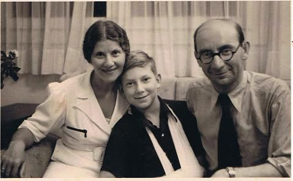
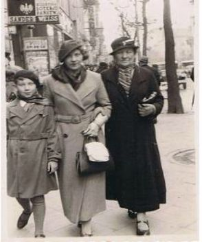
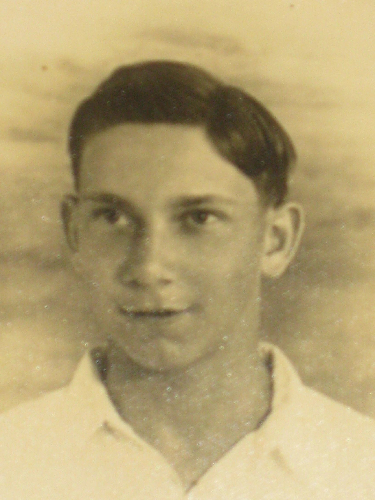
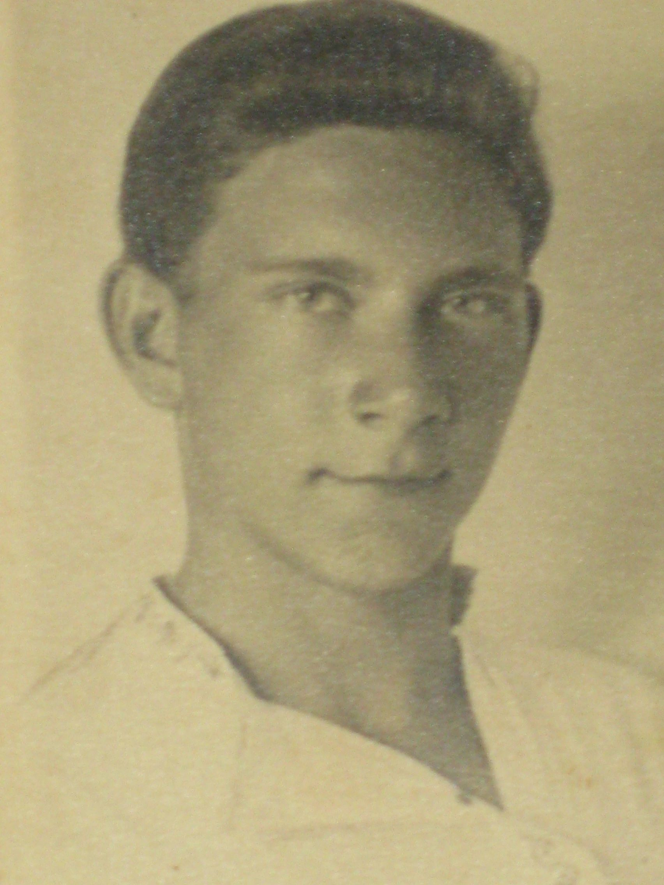
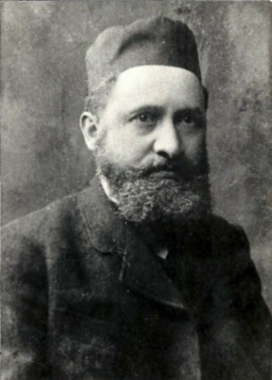
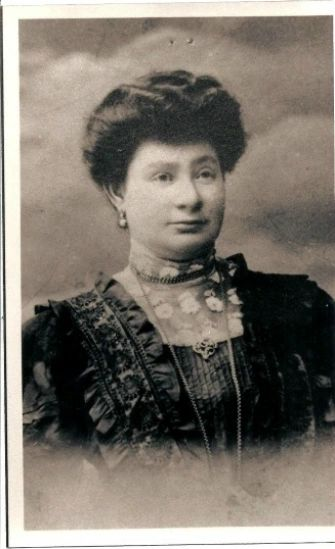
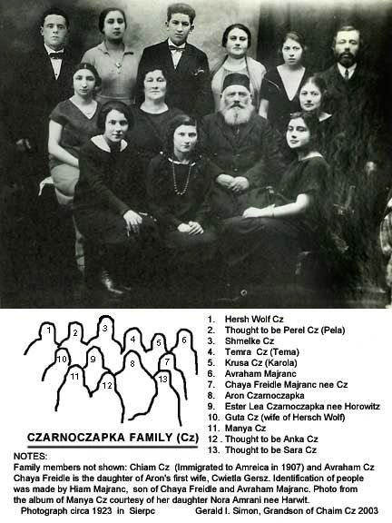

Origins
Parents
Efraim was the son of Anka and David Talmon (originally Tauman). The family, Polish Jews who lived in Germany, emigrated to Palestine in the 1930s after Hitler's rise to power.


Youth


More pictures of Efraim and his family can be found here.
Family History
Efraim's paternal grandparents, David's parents, were Mendel and Sarah Tauman. His maternal grandparents, Anka's parents, were Aron and Ester Lea Czarnoczapka.


